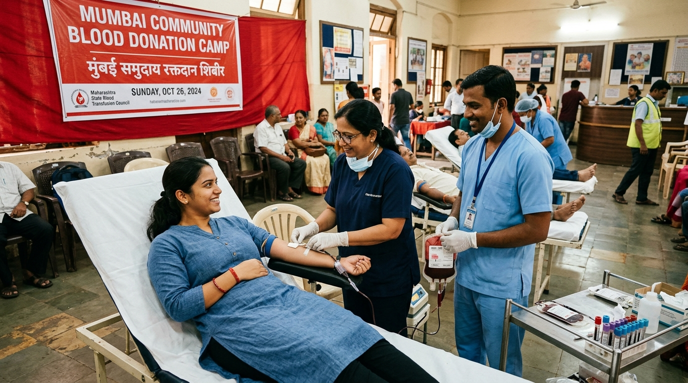
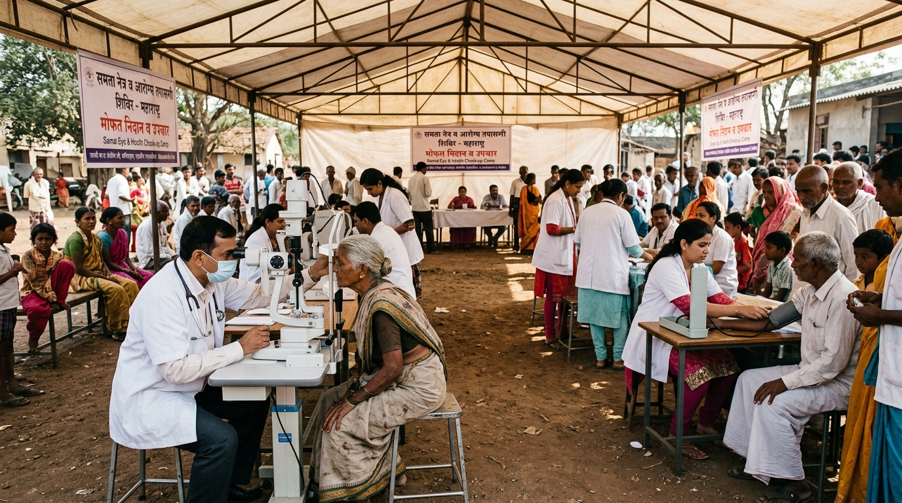
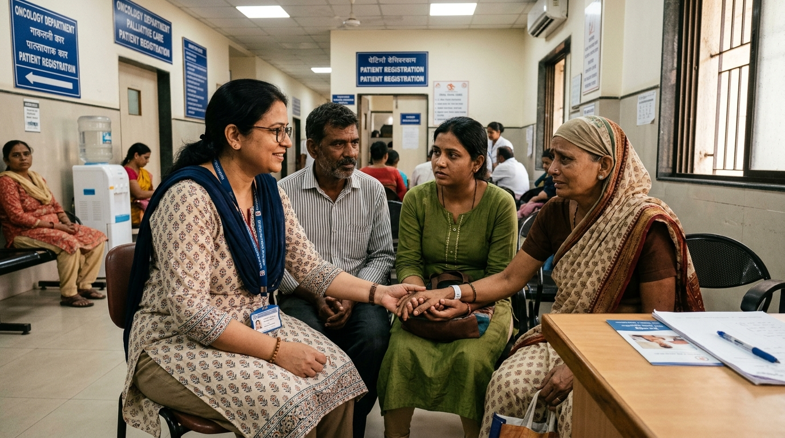

"An early screening camp in Virar caught my tumor at Stage 1. Today, I am cancer-free and living fully."
Avinya Care
Foundation
No one should face a health crisis alone
No one should face a health crisis alone
From blood donation drives and dialysis assistance to cataract, cancer, and cardiac care across the Mumbai-Virar region.
Every drop counts. Every drive saves lives. Regular community blood donation camps ensuring a steady, reliable supply for surgeries, emergencies, and long-term patient care.
Consistent care, without the financial strain. Subsidised dialysis sessions and logistics support, so patients never have to choose between treatment and travel.
Restoring sight, restoring independence. Free screening camps and sponsored cataract surgeries for senior citizens across our community.
Awareness today. Survival tomorrow. From early screening to full patient-family navigation — we walk beside every family through diagnosis and treatment.
Every heartbeat deserves attention. Preventive check-ups, early cardiac risk screening, and emergency awareness programs built for our region.
Catch it before it becomes a crisis. Mobile diagnostic units and free clinical checkups bringing early detection directly to underserved communities.
No one walks this journey alone. Bedside companions, caregiver guidance, and confidential helpline support — because healing isn't just medical, it's human.
Explore our core operational pillars designed for early detection, subsidized care, and compassionate navigation.
Ensuring emergency blood supplies for surgeries and trauma care, alongside subsidized logistics and ongoing support for chronic dialysis patients across the region.

Free eye screening camps, sponsored cataract surgeries restoring sight for seniors, and preventive cardiovascular checkups catching cardiac risks early.

Promoting cancer awareness, demystifying pathology reports, and walking beside patients and families with compassionate bedside companions and helpline navigation.

Every contribution directly empowers individuals with knowledge, early screening, and compassionate care across the Mumbai-Virar region.
Updated every day with clinical breakthroughs, global early screening initiatives, and verified healthcare news from medical institutes worldwide.
Avinya Care Foundation connects patients, caregivers, and medical partners across the Mumbai-Virar region.
"Dedicated to guiding families with clear information, early screening access, and compassionate support at every stage."
"Encouraging early diagnosis and preventative screening camps to catch health issues before symptoms escalate."
"Building a reliable bridge between underserved communities and essential clinical diagnostics and treatment."
Your contribution helps us build awareness, encourage early screening, and support people affected by health crises across the Mumbai-Virar region.
Fund early diagnostic screening camps, dialysis assistance, cataract surgeries, and patient care packages.
Join our care navigation team, assist in community screening drives, or provide bedside patient companionship.
Sponsor diagnostic labs, mobile screening vans, and regional community healthcare initiatives.
Together, we create hope.
Choose an amount to support health awareness, screening drives, and patient care across the region.
Join our care navigation team or assist in community screening drives.
Enter your email to receive our comprehensive health screening checklist & multi-lingual guide PDF.
Our care navigators provide free, confidential support for patients, caregivers, and families.
Send us a message and our team will get back to you within 24 hours.
Partner with Avinya Care Foundation for employee wellness drives, mobile screening vans, and community health initiatives.
Receive monthly healthcare updates, screening tips, and patient stories delivered to your inbox.
Help us improve our community programs and patient support services.
Avinya Care Foundation is committed to absolute patient confidentiality, donor data security, and transparent governance in accordance with the Digital Personal Data Protection (DPDP) Act 2023 and healthcare ethics standards.
We do not sell, rent, lease, or monetize user, patient, or donor personal data to any commercial advertisers, third-party marketing brokers, or pharmaceutical marketing entities.
Information submitted via helpline intake forms, diagnostic requests, or medical support channels is strictly confidential. Medical summaries and screening inquiries are accessible only to authorized clinical coordinators and registered volunteer doctors for triage and navigation assistance.
Payment transactions (UPI, NetBanking, Credit/Debit cards) are processed via RBI-licensed, 256-bit SSL encrypted payment gateways. PAN and contact details collected for Form 10BE / 80G tax receipts are securely retained exclusively for Income Tax Department statutory filing and direct receipt delivery.
Supporters and beneficiaries may request review, modification, or erasure of their records at any time. For privacy inquiries or grievances, contact our Data Protection Coordinator at info@avinyacarefoundation.com or Helpline +91 74474 41116.
Welcome to Avinya Care Foundation. By accessing our platform, helpline, or community programs, you agree to the following terms and humanitarian service guidelines.
Avinya Care Foundation is a registered humanitarian NGO providing awareness, screening coordination, caregiver guidance, and healthcare navigation. We are not an emergency hospital or emergency rescue unit. For critical emergencies, please immediately visit the nearest emergency room or dial national emergency helplines (112 / 108).
All clinical consultations and diagnostic screenings are conducted by licensed independent clinicians and accredited diagnostic pathology centers. Information published on our awareness portals is for educational literacy only and does not substitute for a formal clinical diagnosis by a registered medical practitioner.
All donations made to Avinya Care Foundation are voluntary charitable contributions utilized directly for community health drives, patient care kits, and diagnostic subsidies. Donations are eligible for 50% tax exemption under Section 80G of the Indian Income Tax Act.
These terms are governed by the laws of India. Any disputes arising out of the foundation's services shall be subject to the exclusive jurisdiction of the competent courts in the Mumbai / Vasai-Virar Judicial District, Maharashtra.
Avinya Care Foundation is fully certified, audited, and registered under Indian law with complete non-profit statutory accountability.
Registered under Section 80G of the Indian Income Tax Act, 1961. Donors receive instant 80G receipts and annual Form 10BE certificates for claiming tax deductions.
Granted non-profit charitable status under Section 12A of the Income Tax Department, ensuring all incoming donations are dedicated 100% to charitable purposes.
Registered with the Ministry of Corporate Affairs (MCA) under Form CSR-1 to execute corporate social responsibility healthcare and diagnostic screening mandates under Companies Act, 2013.
Verified and listed on the Government of India's central NGO Darpan portal for transparent public tracking, regulatory compliance, and institutional collaboration.